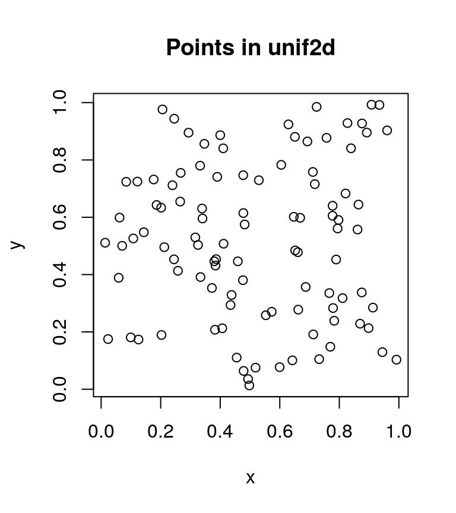
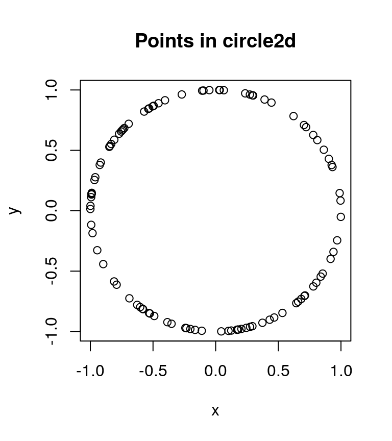
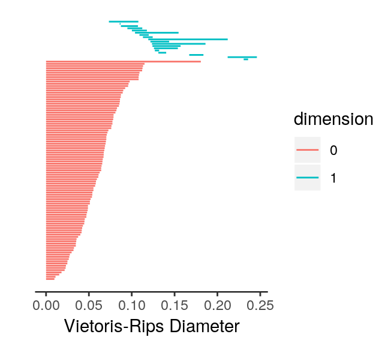
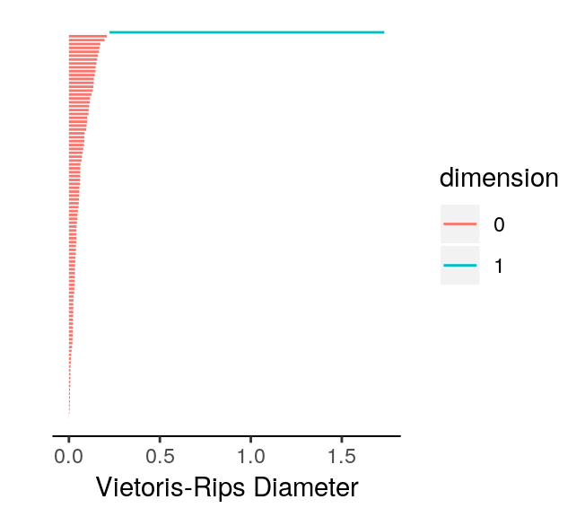
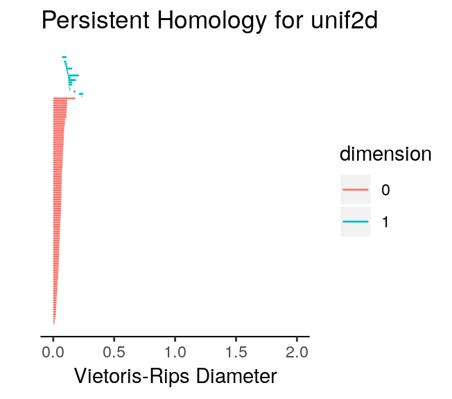
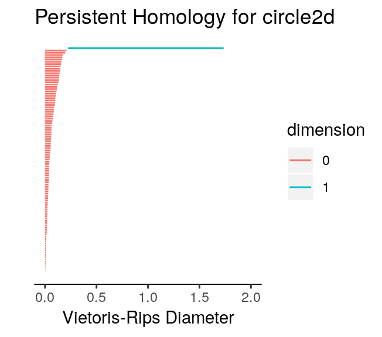
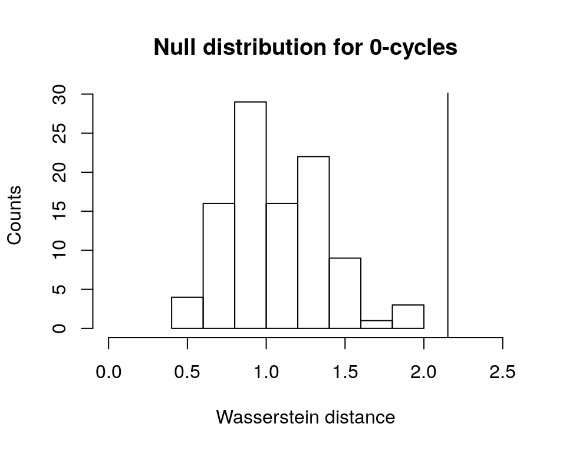
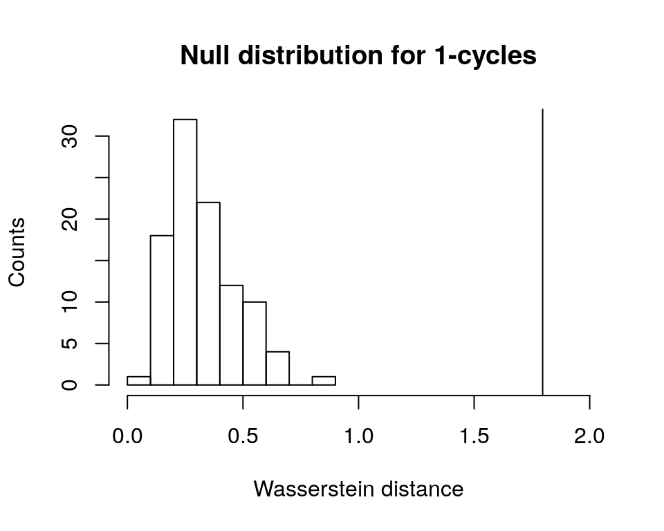

vignettes/inference.Rmd
inference.RmdTo learn about the basics of permutation tests and statistical resampling from an excellent textbook, see Chihara and Hesterberg (2011). For a primer on hypothesis testing with permutation tests in the context of topological data analysis, see Robinson and Turner (2017). Since the distribution of topological features has not been well characterized yet, statistical inference on persistent homology must be nonparametric. Given two sets of data, \(X\) and \(Y\), conventional statistical inference generally involves comparison of the parameters of each population with the following null and alternative hypotheses:
\[ \begin{aligned} H_0&: \mu_X=\mu_Y \\ H_A&: \mu_X\neq\mu_Y \end{aligned} \] If we define a function \(T\) that returns the persistent homology of a point cloud, then given two point clouds, \(C\) and \(D\), we can use a permutation test to conduct analogous statistical inference with the following null and alternative hypotheses:
\[
\begin{aligned}
H_0&:T(C)=T(D) \\
H_A&:T(C)\neq T(D)
\end{aligned}
\] TDAstats uses the Wasserstein distance (aka Earth-mover’s distance) as a similarity metric between persistent homologies of two point clouds (Vallender 1974). Although visual analysis of plots (topological barcodes and persistence diagrams) is essential, a formal statistical procedure adds objectivity to the analysis. The case study below highlights the main features of TDAstats pertaining to statistical inference. For practice, perform the steps of the case study to the unif3d and sphere3d datasets.
unif2d versus circle2d
To ensure that all the code output in this section is reproducible, we set a seed for R’s pseudorandom number generator. We are also going to need the unif2d and circle2d datasets provided with TDAstats, so we load them right after setting the seed.
# ensure reproducible results
set.seed(1)
# load TDAstats
library("TDAstats")
# load relevant datasets for case study
data("unif2d")
data("circle2d")The unif2d dataset is a numeric matrix with 100 rows and 2 columns containing the Cartesian x- and y-coordinates (columns 1 and 2, respectively) for 100 points (1 per row). The points are uniformly distributed within the unit square with corners \((0, 0)\), \((0, 1)\), \((1, 1)\), and \((1, 0)\). We confirm this with the following scatterplot.
# see if points in unif2d are actually distributed
# within a unit square as described above
plot(unif2d, xlab = "x", ylab = "y",
main = "Points in unif2d")
The points do appear uniformly distributed as described above. Next, we take a look at the circle2d dataset, which is also a numeric matrix with 100 rows and 2 columns. However, circle2d contains the Cartesian x- and y-coordinates for 100 points uniformly distributed on the circumference of a unit circle centered at the origin. Like we did with unif2d, we confirm this with a scatterplot.
# see if points in circle2d are actually distributed
# on the circumference of a unit circle as described
plot(circle2d, xlab = "x", ylab = "y",
main = "Points in circle2d")
The points indeed appear to be uniformly distributed on a unit circle.
Before we use a permutation test to see if unif2d and circle2d exhibit distinct persistent homologies, we should take a look at the topological barcodes of each. Since we have 2-dimensional data, we are primarily concerned with the presence of 0-cycles and 1-cycles. If points were connected to each other by edges in a distance-dependent manner, then the resulting graphs (assuming a “good” distance-dependence) for unif2d and circle2d would have a single major component. Thus, we do not expect interesting behavior in the 0-cycles for either dataset. There also does not appear to be a prominent 1-cycle for the points in unif2d. However, the circle2d dataset was intentionally designed to have a single prominent 1-cycle containing all the points in the dataset. Thus, when we plot the topological barcodes for circle2d we should see a persistent 1-cycle that we do not see in the barcode for unif2d. We confirm our expectations with the following code.
# calculate homologies for both datasets
unif.phom <- calculate_homology(unif2d, dim = 1)
circ.phom <- calculate_homology(circle2d, dim = 1)
# plot topological barcodes for both datasets
plot_barcode(unif.phom)
plot_barcode(circ.phom)
We note two aspects of the topological barcodes above: (1) the limits of the horizontal axis are very different making direct comparison difficult; (2) it could be confusing to tell which barcode corresponds to which dataset. To fix these issues and demonstrate how the topological barcodes can be modified with ggplot2 functions (plot_barcode returns a ggplot2 object), we run the following code.
# load ggplot2
library("ggplot2")
# plot barcodes with labels and identical axes
plot_barcode(unif.phom) +
ggtitle("Persistent Homology for unif2d") +
xlim(c(0, 2))
> Scale for 'x' is already present. Adding another scale for 'x', which
> will replace the existing scale.
plot_barcode(circ.phom) +
ggtitle("Persistent Homology for circle2d") +
xlim(c(0, 2))
> Scale for 'x' is already present. Adding another scale for 'x', which
> will replace the existing scale.
We can safely ignore the warnings printed by ggplot2. Rescaling the horizontal axis had two major effects. First, we notice that the 0-cycles which appeared far more persistent for unif2d than for circle2d are now comparable. Second, the 1-cycles in unif2d are not persistent after the rescaling operation. Since the only prominent 1-cycle is now in circle2d, our expectations with respect to the topological barcodes were correct. We can now run a permutation test on the two datasets to confirm that the persistent homologies of the two are, in fact, distinct. To do this, all we have to do is use the permutation_test function in TDAstats, and specify the number of iterations. Increasing the number of iterations improves how well the permutation test approximates the distribution of all point permutations between the two groups, but also comes at the cost of speed. Thus, a number of iterations that is sufficiently large to properly approximate the permutation distribution but not too large to be computed is required. Almost certainly, the ideal number of iterations will change as the available computing power changes.
# run permutation test
perm.test <- permutation_test(unif2d, circle2d, iterations = 100)
# display p-value for 0-cycles
print(perm.test[[1]]$pvalue)
> [1] 0
# display p-value for 1-cycles
print(perm.test[[2]]$pvalue)
> [1] 0Note that the printed p-values for each set of cycles are unadjusted p-values. To see how p-values can be adjusted for permutation tests, see Chihara and Hesterberg (2011). You may also want to look at the null distributions generated by the permutation test for each dimension as follows.
# plot null distribution for 0-cycles as histogram
# and add vertical line at Wasserstein distance
# for original groups
hist(perm.test[[1]]$permvals,
xlab = "Wasserstein distance",
ylab = "Counts",
main = "Null distribution for 0-cycles",
xlim = c(0, 2.5))
abline(v = perm.test[[1]]$wasserstein)
# plot null distribution for 1-cycles as histogram
# and add vertical line at Wasserstein distance
# for original groups
hist(perm.test[[2]]$permvals,
xlab = "Wasserstein distance",
ylab = "Counts",
main = "Null distribution for 1-cycles",
xlim = c(0, 2))
abline(v = perm.test[[2]]$wasserstein)
Given that both vertical lines are far right of the plotted histograms (corresponding to the p-values of zero), we can conclude safely that the permutation test has given us sufficient evidence to reject the null hypothesis. Thus, the persistent homologies of unif2d and circle2d appear to be significantly different.
N.B.: persistence diagrams (using the plot_persist function) could replace the topological barcodes above. However, since the vertical and horizontal axes are important in persistence diagrams, the ylim ggplot2 function would also have to be used to rescale axes.
For practice, you can repeat the case study for the unif3d and sphere3d datasets. Keep in mind that the dim parameter in the calculate_homology function would likely have to be changed and that you will have a third permutation distribution generated that would need to be plotted.
Chihara, Laura, and Tim Hesterberg. 2011. Mathematical Statistics with Resampling and R. Wiley. https://sites.google.com/site/chiharahesterberg/home.
Robinson, Andrew, and Katharine Turner. 2017. “Hypothesis Testing for Topological Data Analysis.” Journal of Applied and Computational Topology 1: 241. doi:10.1007/s41468-017-0008-7.
Vallender, SS. 1974. “Calculation of the Wasserstein Distance Between Probability Distributions on the Line.” Theory Probab Appl 18: 784–86. doi:10.1137/1118101.